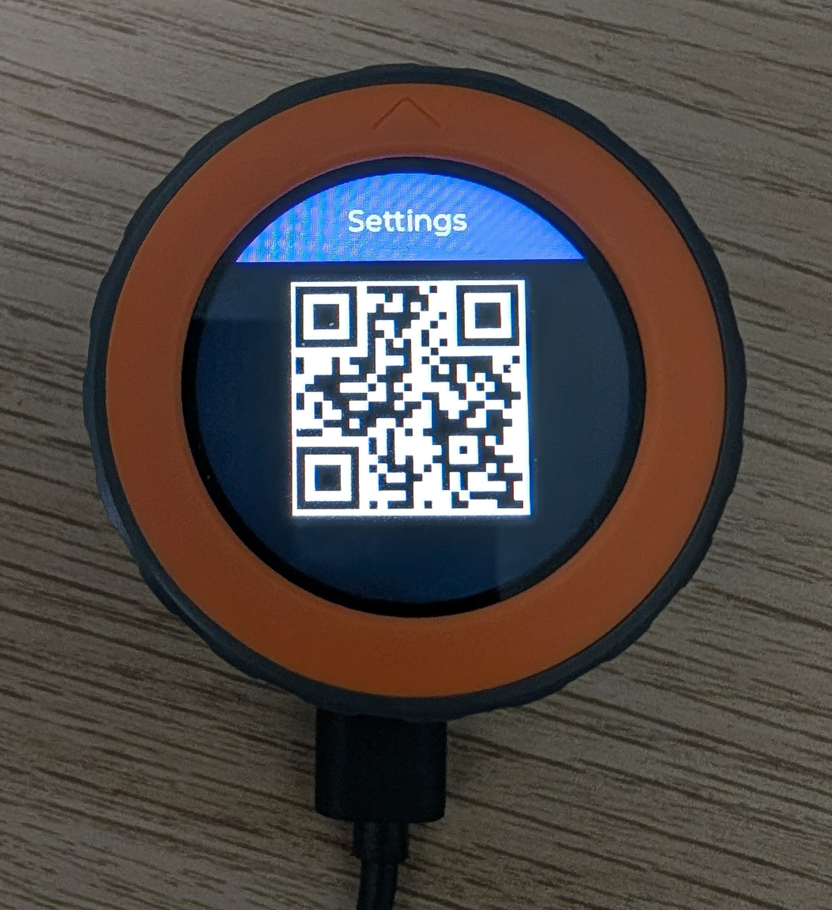
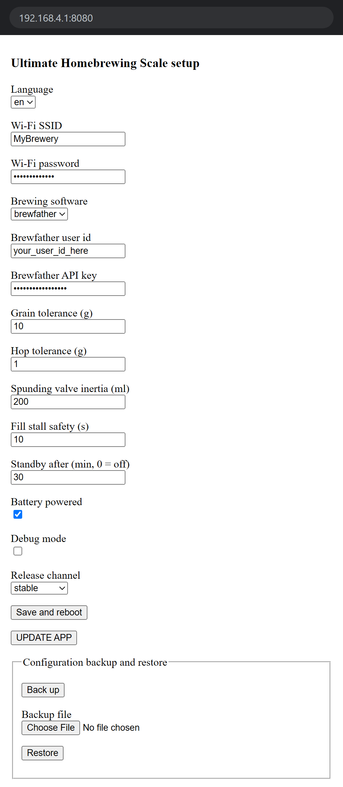

Turn the dial
Moves the selection in a list or on the launcher, and adjusts a value such as a keg volume.
Step 3 of 3 · Use
UHS is installed and calibrated: time to brew. Learn its three controls in a minute, then follow each app step by step, from weighing your recipe's malts and hops to filling a keg.
Back to the launcher
Hold the button 3 s
Back one screen
¼ turn to the left
Wake from standby
Touch the screen
Everything is driven from the rotary dial and the button under the screen. The touch screen is only used to wake UHS from standby.
Moves the selection in a list or on the launcher, and adjusts a value such as a keg volume.
Confirms: opens the selected app or item, acknowledges a message, tares the scale, validates a weighing.
Leaves the current app and goes back to the launcher, from any screen. During a keg fill, the valve closes first.
Steps back one screen. It works on message and weighing screens, where the dial has nothing else to do.
Wakes UHS when it is in standby. Touch has no other role while UHS is awake.
Stepping back: on a list, turning the dial moves the selection, so the quarter turn cannot mean "back" there: hold the button 3 seconds instead. The gesture is also ignored while a keg is filling and on the screens that report a finished weighing, so a knock on the dial never undoes a result or reopens the valve.
UHS opens straight on the launcher and connects to your Wi-Fi by itself. If it opens on a QR code or on the calibration wizard instead, its installation is not finished: pick it up where you left it in the Software Installation Guide.
The five apps sit on an arc around the round screen. Turn the dial to move the white marker from one icon to the next: UHS beeps and shows the name of the selected app in the centre. The selection wraps around from the last app to the first. Press the button to open the app; a loading screen in the app's colour appears while it starts.
Malt and Hop share the same weighing screen. It counts down instead of up, so you always read what is left to pour:
| On screen | Meaning |
|---|---|
| Title bar | The ingredient being weighed and, for hops, the container number. |
| Large number | The weight still to add. It shows grams below 1 kg and kilograms with two decimals above. |
| Progress bar and percentage | How much of the target is already on the scale. |
+ in front of the number, red bar |
You poured too much: the number is the excess to take back out. |
| OK marker | The weight is within the tolerance set in the portal (10 g for malts and 1 g for hops by default). Press the button to validate. Once shown, the marker stays even if the reading drifts a little. |
The scale tares itself when a weighing starts, with the empty container already on the platform, so its weight never counts.
UHS can switch itself off after a period without activity. It is off by default and set in the setup portal with Standby after (min, 0 = off); 30 minutes is recommended, and required on battery.
A press on the button, a turn of the dial or a change of weight on the platform all count as activity and restart the countdown. Leaving a container on the scale does not keep UHS awake; pouring into it does.
The screen turns black. If a keg valve is connected, it stays closed while UHS sleeps.
UHS starts up again on the launcher, not on the screen you left.
The button cannot wake UHS: the M5Stack Dial hardware does not allow it. Only a touch on the screen wakes it up.
When UHS never sleeps: during the scale calibration wizard, during a software update, and in the Keg app from the moment the valve opens until you leave the end-of-fill or no-flow screen. Sleeping then would lose the calibration, break the installation or cut a fill short.
A plain kitchen scale, for anything that is not part of a recipe: water salts, sugar, yeast, a sample.
The scale tares as soon as the app opens: Taring..., then Tare done!. Whatever is on the platform at that moment reads as 0 g.
The weight is shown live, in grams below 1 kg and in kilograms above. The status line reads Press to tare.
Press the button to zero the scale, for example to weigh a second ingredient in the same container. Tare error means the weight unit did not answer: check its cable, then press again.
Turn the dial a quarter turn to the left, or hold the button 3 seconds.
Weighs the grain bill of a Brewfather batch, one malt after the other, straight from the recipe.
UHS shows Loading recipes... and lists your Brewfather batches whose status is
Brewing. Turn the dial to choose one and press. With a single batch in progress, the
list is skipped.
After Loading grains..., the list Select a malt shows the grains and malts of the recipe. Choose the one you want to weigh and press. You can weigh them in any order.
Put the empty container on the platform, then press OK. The scale tares with the container on it.
The title bar shows the malt name and the large number counts down to 0 g, as described in the weighing screen. When OK appears, press the button to validate.
The weighed malt leaves the list and you are back on Select a malt. When the last one is validated, UHS shows All malts weighed!: press to go back to the launcher.
Stepping back: on the weighing screen, a quarter turn to the left brings back the "place the container" prompt; from that prompt, it goes back to the malt list.
What is listed: only fermentables of type Grain or
Malt in Brewfather. Sugars, extracts and adjuncts are left out, so weigh them with the
Scale app.
Weighs every hop addition of a Brewfather batch and sorts them into numbered containers, one per addition time, so the brew day is ready before the boil starts.
As in Malt, UHS lists your batches in Brewing status and skips the list when there
is only one.
After Loading hops..., UHS asks you to Prepare N container(s) for hop additions. There is one container per distinct addition, for example boil at 60 min, boil at 10 min and a 3-day dry hop. Number them, then press OK.
On Select a hop, choose a variety and press.
The list shows every use of that hop in the recipe, as
container : use - time (amount), for example 1 : Boil - 60min (25g).
Choose one and press.
UHS asks you to Place recipient N on the scale. Put that container on the platform, even if it already holds another hop, then press OK: the scale tares with it.
The title bar shows the hop and the container number. When OK appears, press the button to validate.
The addition leaves the list. When a hop has no addition left, UHS shows <hop> weighed; press to return to the hop list. After the last one, All hops weighed! appears: press to go back to the launcher.
Stepping back: a quarter turn to the left takes you from the weighing screen to the "place recipient" prompt, then to the list of additions. From the "prepare containers" prompt it goes back to the recipe list.
Fills a keg by weight and closes the solenoid valve by itself when the keg is full. Each keg is registered once, then chosen from a list. Filling needs the optional relay and valve described in the Hardware Installation Guide.
The app opens on Empty the scale platform. Clear it and press OK: the scale tares.
The list Choose a keg shows your registered kegs, followed by Add. Pick Add to register a new keg, or a keg name to fill it.
Calibration (1/2) asks you to place on the platform the empty keg, the spunding valve and the connected tube: everything that will sit on the scale during a fill. Press OK, then do not touch anything during the 10-second measurement.
On Calibration 2/2, turn the dial to set the volume of beer the keg should receive, from 0.5 to 60 L in 0.5 L steps (18 L to start with). Press to save.
Keg Calibrated shows the name given to it: keg0, keg1 and so on.
Press OK: you are back on the keg list with the new keg selected. The name can be
changed later in the setup portal, from the Settings app.
After choosing the keg, follow the checklist on screen: put the keg on the scale, connect the spunding valve, connect the beer line. Press OK to start: the valve opens.
The screen shows the volume poured in litres and a progress bar. UHS stops a little before the set volume, by the spunding valve inertia set in the portal (200 ml by default), so the beer still in the line tops the keg up without overflowing.
When the stop weight is reached, the valve closes and OK appears. Press it to reach Filling complete, then choose Another <keg> to fill the same model again, Another Keg to go back to the keg list, or Launcher.
No flow: if the weight does not move for 10 seconds (the Fill stall safety set in the portal), UHS closes the valve and shows how long the volume has been unchanged. Fix the line, then press Resume to reopen the valve and carry on with the same fill, or hold the button 3 seconds to go back to the launcher.
Stopping a fill: hold the button 3 seconds at any time. The valve closes before UHS returns to the launcher. The quarter-turn gesture is ignored during a fill.
Opens the setup portal, a page you open on your smartphone to change every setting, edit your kegs, back up the configuration and update the application. It is the page you used during the installation.
What happens next depends on whether UHS is connected to your Wi-Fi:

UHS-Setup
Skip this step if UHS is on your Wi-Fi. Otherwise, open the Wi-Fi settings of your smartphone and
join UHS-Setup. The setup network has no password.
Stay connected to that Wi-Fi even if the phone warns that it has no internet access. The phone only needs to reach UHS locally.
Important: If the setup page does not open, temporarily turn off mobile data/5G.
Some phones prefer mobile data when the UHS-Setup Wi-Fi has no internet access, which
prevents the browser from reaching UHS locally.
Scan the QR code shown by UHS. On UHS-Setup, it opens http://192.168.4.1:8080/.
If your camera app does not open the page, stay on the same Wi-Fi and type the address in the browser.
As soon as the page loads, the QR code gives way to Setup in progress... on UHS.
The portal page is intentionally simple. Enter the values below, then review them before saving.

UHS-Setup.| Field | What to enter |
|---|---|
| Language | Choose English or French for the interface of UHS and of the portal. |
| Wi-Fi SSID | Enter the exact name of your 2.4 GHz Wi-Fi network. |
| Wi-Fi password | Enter the password for that Wi-Fi network. |
| Brewing software | Leave brewfather selected. |
| Brewfather user id | Paste your Brewfather API user ID. |
| Brewfather API key | Paste your Brewfather API key. It is hidden as you type. |
| Grain tolerance (g) | How close to the target a malt must be for OK to appear. Default 10. |
| Hop tolerance (g) | The same for hops. Default 1. |
| Spunding valve inertia (ml) |
How far before the set volume the keg filler closes the valve, to leave room for the beer still
in the line. Keep the default 200 ml; raise it if your kegs overflow, lower it if they
end up short.
|
| Fill stall safety (s) |
Seconds without any weight change before the keg filler closes the solenoid valve. Keep the
default 10 (accepted range: 3 to 600). UHS then shows
how long the volume has been unchanged: press Resume to reopen the valve and
restart the countdown, or hold the button to go back to the launcher.
|
| Standby after (min, 0 = off) |
Minutes without activity before UHS goes to sleep (see Standby and Wake-up).
Enter 30: it is the recommended value on mains and a requirement on
battery. 0 disables standby.
|
| Battery powered | Tick this box only if a battery is fitted inside UHS. Leave it unticked on mains. |
| Debug mode | Leave it unticked. It is only useful when reporting a problem. |
| Release channel | Keep Stable. Pre-release gets new versions before everyone else, to test them. |
Running on battery: if you fitted the optional LiPo cell, these two settings go
together. Standby after set to 30 minutes stops an idle screen from
draining the charge, and Battery powered lets UHS restart by itself if it ever freezes:
on battery, there is no plug to pull.
Tap Save and reboot. UHS saves the Wi-Fi credentials and the settings, then restarts on its own. If a value is refused, the page shows Invalid fields and nothing is saved.
Every keg registered from the Keg app is listed under Kegs, with its Keg name, its Empty weight in grams and its Max volume in litres. Edit them, then tap Save and reboot. The Delete button next to a keg removes it at once, without restarting UHS.
Back up downloads uhs-backup.txt, a text file holding the settings, the Wi-Fi
credentials, the kegs and the scale calibration. To put them back, for example after reinstalling the application,
choose that file under Backup file and tap Restore: UHS writes it and
restarts.
Keep the backup private: it contains your Wi-Fi password and your Brewfather API key in plain text.
UPDATE APP restarts UHS, which downloads and installs the latest version of the chosen Release channel, then shows Installation complete, OK to restart: press the button. UHS never goes to sleep during an update; do not unplug it either.
Turn the dial a quarter turn to the left, or hold the button 3 seconds. The portal closes, and so does the
UHS-Setup network.
The messages you are most likely to meet during a brew day, and what to do about them.
Brewing status are listed. Change the batch status in Brewfather, then open the app again. If a batch is brewing, check the Brewfather user ID and API key in the setup portal.Grain or Malt. Weigh the others with the Scale app.UHS-Setup, temporarily turn off mobile data/5G, then manually open http://192.168.4.1:8080/.UHS-Setup back up. Check the SSID spelling and confirm it is a 2.4 GHz network.